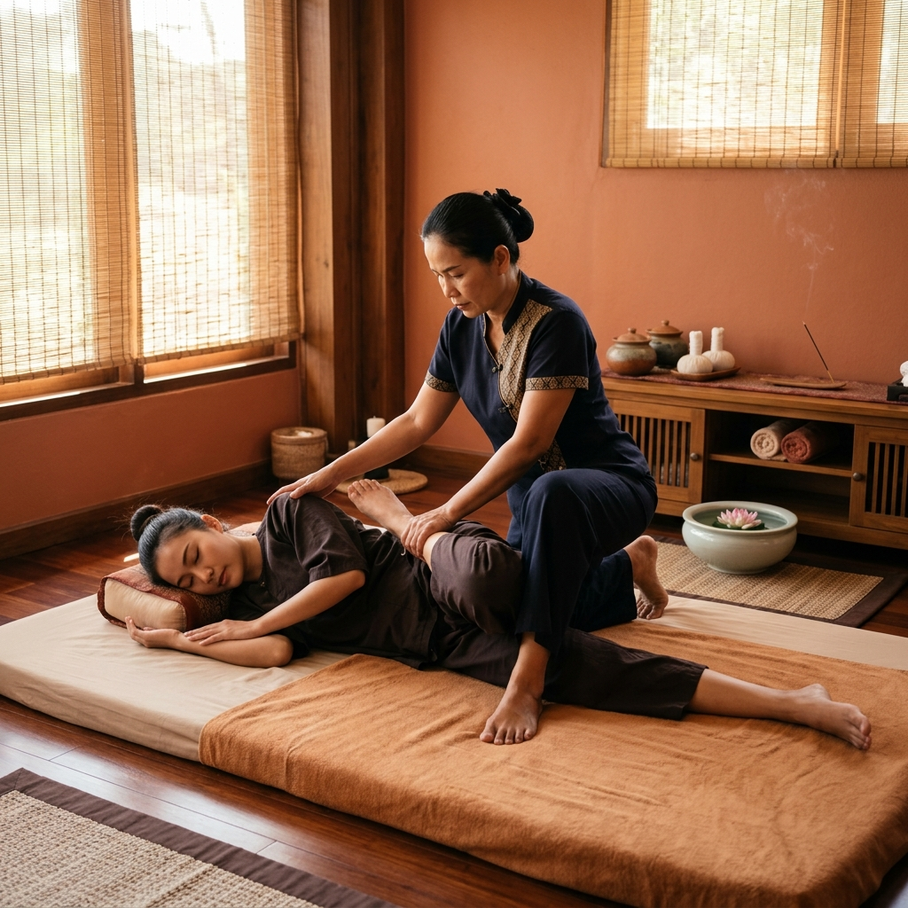

หัตถการบำบัดนวดไทยเพื่อการรักษา (Royal & Therapeutic Thai Massage)
การกด รีด และดัดดึงตามแนวเส้นประธานสิบ โดยแพทย์แผนไทยผู้เชี่ยวชาญ เน้นการคลายปมกล้ามเนื้อที่หดเกร็งสะสม เพิ่มระดับการเคลื่อนไหวของข้อต่อ
สรรพคุณทางการรักษา & ประโยชน์:
- บรรเทาอาการออฟฟิศซินโดรม ปวดคอ บ่า ไหล่ และหลัง
- กระตุ้นการไหลเวียนของโลหิตและระบบน้ำเหลืองทั่วร่างกาย
- คลายความตึงเครียดของเส้นเอ็นและเพิ่มความยืดหยุ่น